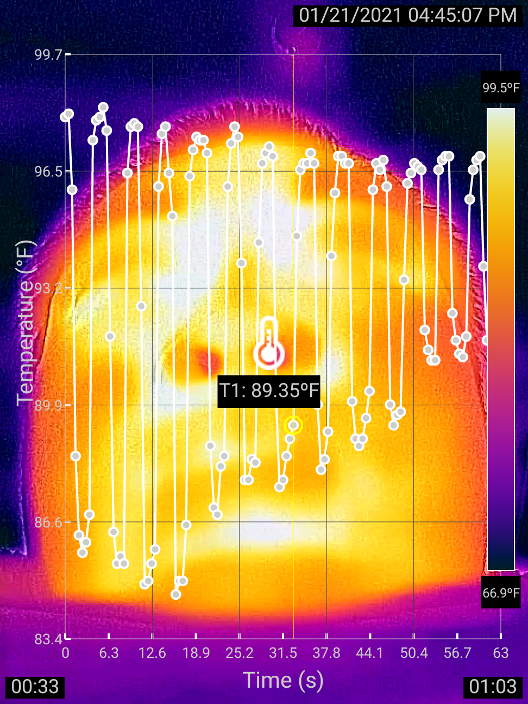
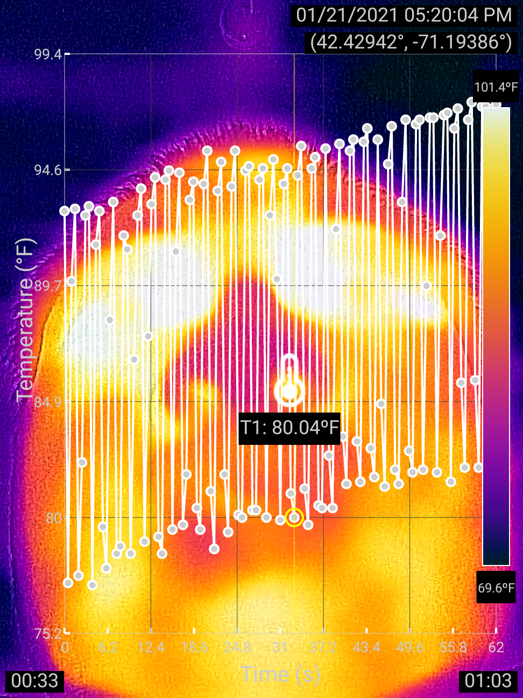
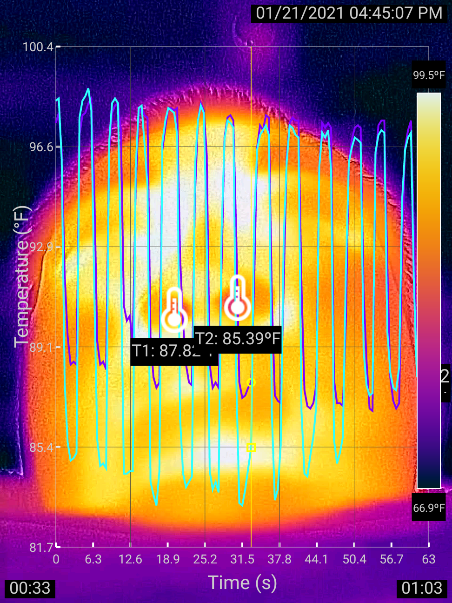
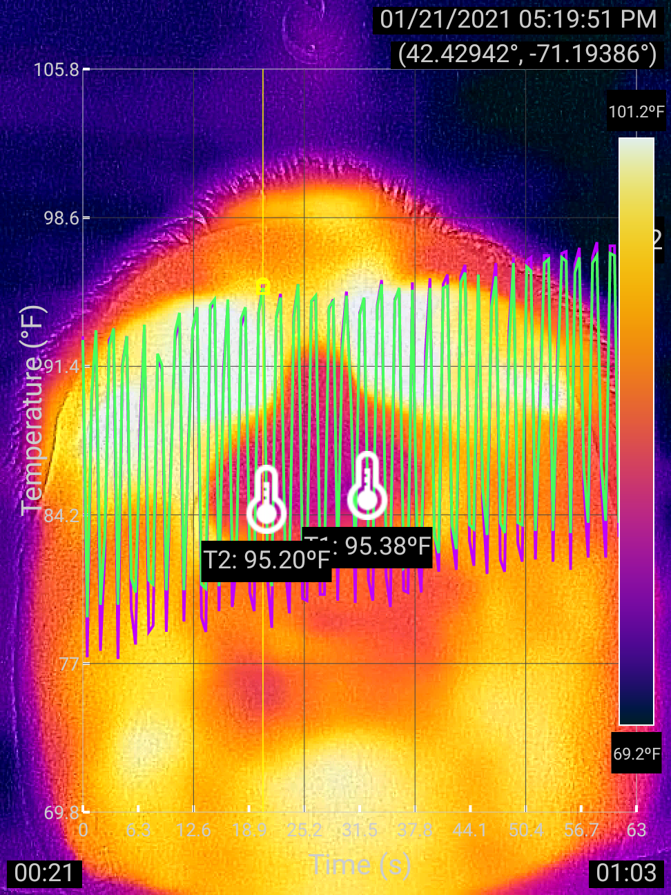
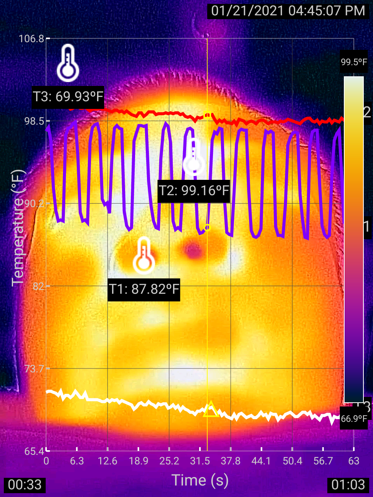
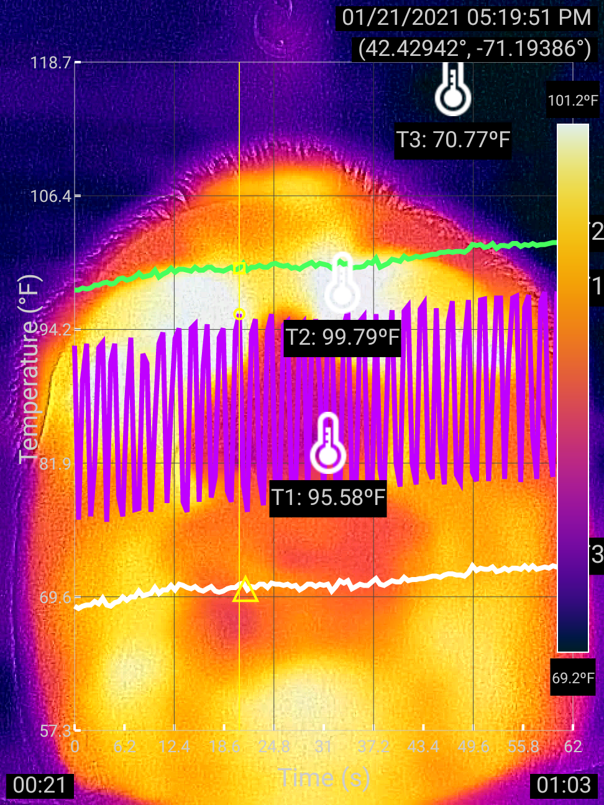

Visualizing Respiratory Responses to Exercise
By Charles Xie ✉
Back to Infrared Explorer home page
Listen to a podcast about this article
Breathing causes the nostrils to change temperature periodically as the inhaled air cools them and the exhaled air warms them. This effect can be used to measure the respiratory rate with our Infrared Explorer (currently available as an Android app for FLIR ONE thermal cameras). In this article, we investigate human's respiratory responses to exercise using the Infrared Explorer.
The average respiratory rate of a healthy adult at rest is 12-18 breaths per minute. The rate increases while exercising. If the exercise is intense, it may increase to 40–50 breaths per minute, according to this source.
The following thermal images show the temperature fluctuations of a nostril of an adult in approximately 60 seconds before and after moderate exercise. The respiratory rate was about 12 breaths per minute before exercise and 33 breaths per minute after exercise.


Comparison of the nostril temperature fluctuation of an adult before and after exercise.
The videos are also available on our Telelab platform for you to view and analyze via the following links:
Click HERE to analyze the result before exercise
Click HERE to analyze the result after exercise
Comparing the temperature cycles of two nostrils
The thermal images show more information beyond the rates. For further inquiry, we are interested in examining whether the temperature cycles of two nostrils were synchronized and had comparable amplitudes of fluctuation (if not, the person under observation might have asymmetric nasal congestion). Since we have recorded the observations using the Infrared Explorer, we can easily add another thermometer and generate a new graph for comparison — instead of having to record the observation all over again, as illustrated below:


Comparison of the temperature fluctuations of the two nostrils of an adult before and after exercise.
The temperature curves of the two nostrils in both cases were synced and exhibited similar amplitudes of fluctuation, further proving the validity of our data.
Comparing the nostril temperature with the room temperature
Compared with the case before exercise, the temperature graph after exercise shows a rising trend. Was this caused by the increasing of the human body temperature as a result of exercise? Or was it caused by the warm air from a heating system? We cannot rule out the latter possibility, since this observation was carried out in the winter inside a heated house. To investigate this question, we just need to add two more thermometers to show the changes of the highest and lowest temperatures in the view.


Comparison of the temperature changes of a nostril, the eye area, and the ambient before and after exercise.
The result of the thermometer T3, which is used to measure the ambient temperature, also shows an upward trend in the case after exercise. This suggests that the rising of the average temperature of the nostrils might have been caused by the rising of the ambient temperature in the room, rather than a possible increase of the body heat. This seems to be consistent with the case before exercise, which shows a slightly downward trend of all the three thermometers. Based on this evidence, we conclude that the average temperatures of the nostrils as seen by the thermal camera are primarily determined by the air temperature.